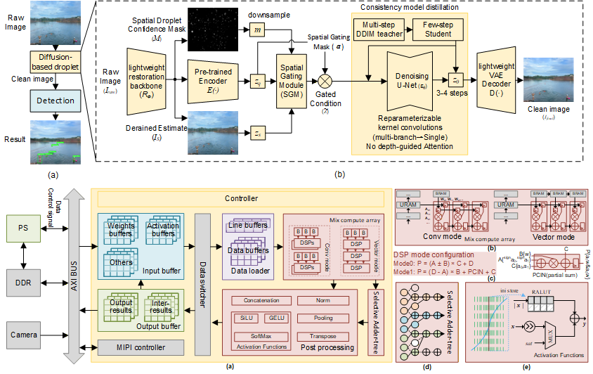
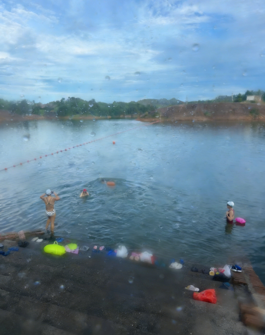
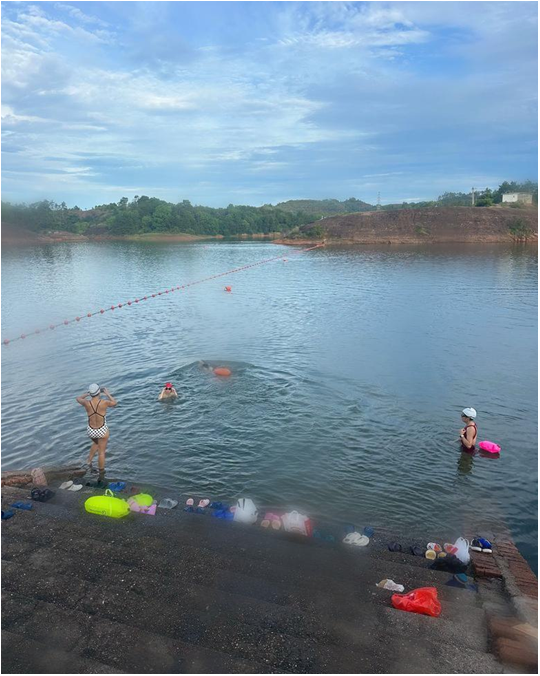

Abstract
Water sports safety can be enhanced by video-based monitoring that enables timely assistance based on participants' states. However, in outdoor aquatic environments, droplets on camera lenses cause false and missed detections in YOLO-based systems. In addition, multiple camera streaming makes center-based processing costly in both real-time computation and communication.
To address these issues, this letter presents a real-time FPGA-based safety monitoring system for water sports. First, a lightweight diffusion-based method is proposed to remove droplets from camera lenses, reducing false detections and missed alarms. Then, an overlay hardware architecture is designed to support the processing of different backbone models. The system is implemented on a ZCU102 FPGA to enable on-device real-time droplet removal and human states detection.
Motivation
Water has always been a part of my life. Years of competitive swimming taught me to read the water — to notice when a swimmer's stroke breaks down, when something is wrong. That awareness sharpened during a diving trip to Hawaii, where I realized how completely I was relying on the person watching from above, and how quickly a single patch of spray on a camera lens could leave a swimmer in distress unseen.
This is what drew our team to the problem. Camera-based monitoring systems are routinely degraded in real outdoor aquatic environments by something as mundane as water droplets on the lens — causing false alarms where there are none, and missing genuine emergencies. The gap between a laboratory benchmark and a rain-spattered poolside camera is, in practice, the gap between a system that saves lives and one that merely looks like it might. Our work started from the conviction that this gap is solvable, and that solving it matters.
Demo Video
Real-time droplet removal and drowning detection running on the ZCU102 FPGA board.
Visual Results
Qualitative comparison of input (with water droplets) vs. our restored output, followed by detection results.


BibTeX
@article{fan2026fpga,
author = {Fan, Xue and Xu, Katherine and Jiang, Wei and Zhang, Song and Bai, Yueyin},
journal = {IEEE Embedded Systems Letters},
title = {FPGA-Based Real-Time Safety Monitoring System for Water Sports
with Diffusion-Based Droplet Removal},
year = {2026},
pages = {1--1},
doi = {10.1109/LES.2026.3690742}
}